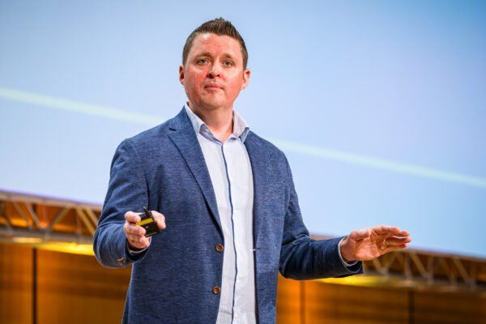

Conferences · Tech
European Power Platform Conference (EPPC) 2027
- Dates
- –
- Location
- Dublin, Ireland
- Format
- In-person
- Category
- Tech
- Industry
- Tech
- Organiser
- ESPC
- Expected attendance
- 2,000
- Official website
- https://espc.tech/conference/eppc-2027/
About
Official page: Dublin, Ireland, 14-17 June 2027. Building not named in the fetched page text; city-level pin.
Topics: Microsoft Power Platform, Copilot, low-code, AI.
Official EPPC 2027 page: "With over 2,000 delegates".
Sources
- Official — https://espc.tech/conference/eppc-2027/